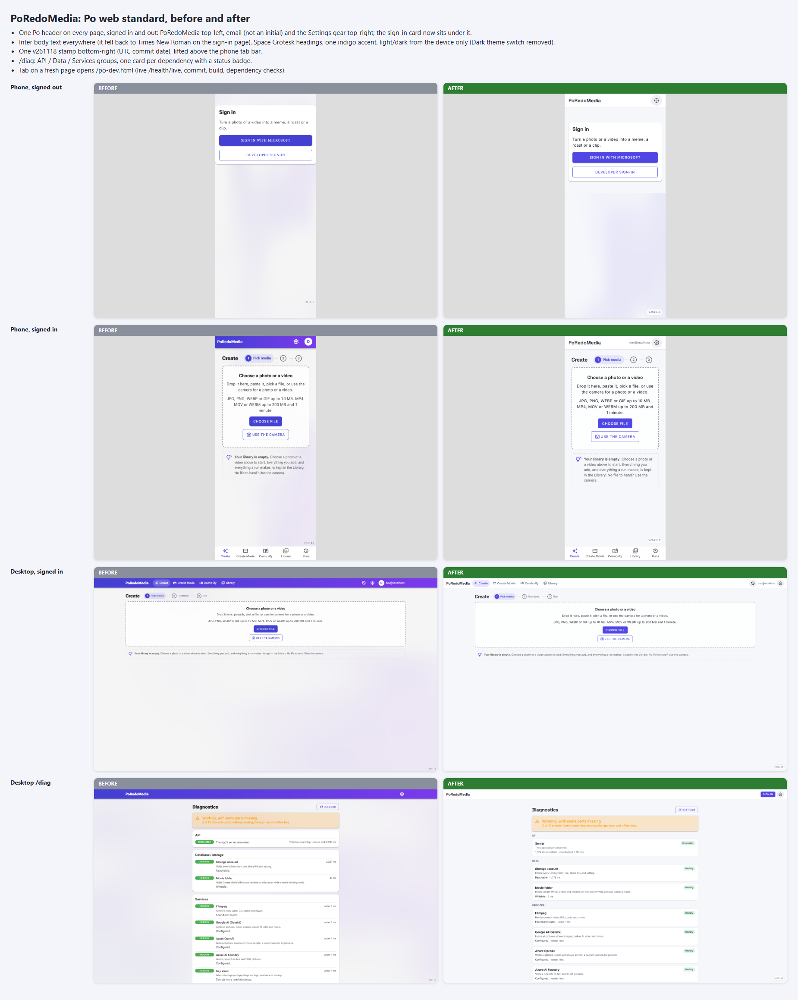

Po web standard (2026-11-18): before and after
- Header on every page, signed in and out (the sign-in page had none): PoRedoMedia top-left; top-right the
account's email (phones showed only an initial) or Sign in, then the Settings gear. The sign-in card sits in the body under it.
- Look: Inter body text (the sign-in page fell back to Times New Roman), Space Grotesk headings, one indigo
accent, light/dark from the device only (the Dark theme switch is gone).
- Build stamp: one
v261118 bottom-right, the UTC date of the commit, above the phone tab bar.
- /diag: API / Data / Services, one card per dependency with a status badge.
- Tab on a fresh page opens
/po-dev.html: live /health/live, commit, build and the dependency checks.
Screenshots, before on the left and after on the right:
